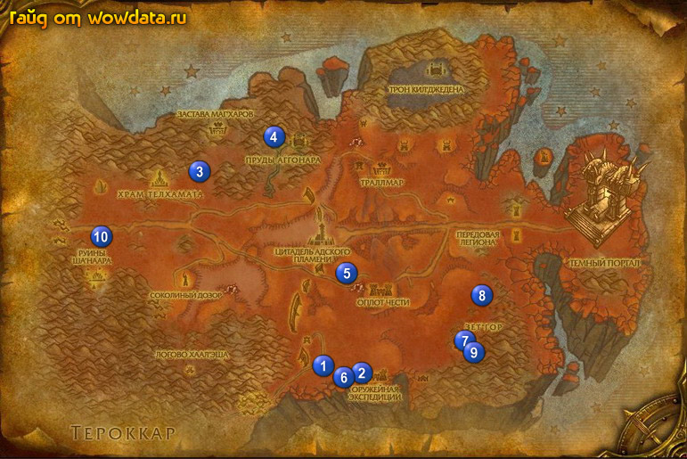

1) Вы найдете Безумный зловепрь около повсюду вокруг разбившегося дережабля, мясо получается с шансом 50/50. Теперь идите на юг от дережабля и бейте демонов бездны 1 (47, 80). Когда закончите идите в (54, 83) и убейте Лейтенант-командор Талвос, затем двигайте на юг и убейте Верховный маг Ксинтор 2 (53, 81) для <Солдатская верность>. Их давольно легко убить. Когда все выполните вернитесь к дережаблю и здайте <Зловепрь – тоже мясо>, пропустите <Летать как птица>, так как там очень маленький шанс дропа. Также закончите <Дикие демоны Бездны>.
2) Вернитесь по руне в Храм Телхамата.
3) Закончите <Реликвии Шанаара>, начните <Реликвия мудреца> и <Помощь Заставе Кенариуса>. Рядом начните <Честолюбивый план>.
4) Идите в южную часть города и закончите <Смертельно опасные хищники> и <Безжалостные десятники>.
5) Идите на восток к Тело Седаи 3 (26, 37) и используйте на него [Реликвия Провидца]. Теперь бегите в 4 (40, 31) и призавите моба используя виалку которую вам дал квестгивер затем убейте его для <Очищение вод>.
6) Теперь вернитесь в город, если вы экономите время то можете умереть и воскреснуть там.
7) В гостинице закончите <Реликвия мудреца> и <Очищение вод>.
8) Летите в Оплот Чести.
9) Бегите к уже знакомой нам башне 5 (51, 60) и внутри заокнчите <Солдатская верность>.
10) Теперь вы на 100% долны стать 61 лвл, или вы чтото делали не так и у вас могут вознитьпроблемы далее.
11) Идите вниз 6 (50, 83), найдите демоноа бездны, оставте ему примерно 25% жизни и используйте кристал из вашего инвертаря, затем используйте крaсный кристал, появившийся после смерти демоноа бездны для <Честолюбивый план>.
12) Идите на восток к 7 (67, 75). Войдите внутрь и бейте мобов для <Проклятые талисманы>.
13) Идите в Лагерь экспедиции закончите <Проклятые талисманы> 8 (70, 63), начните <Вождь Кровавой Лощины>.
14) Вернитесь в Зет'Гор и в большом строении по середине 9 (69, 76) убейте Полководец Морк для <Вождь Кровавой Лощины>, затем вернитесь в Лагерь экспедиции и закончите его.
15) К сожалению цепь тут не заканчивается, за следующий квест можно получить экспы и + репутацию так что если хотите можете выполнить его.
16) Вернитесь в Храм Телхамата (по руне или на грифе из города) и в гoстинице закончите <Честолюбивый план>.
17) Ищите группу используя ЛФГ систему или чат для похода в Цитадель Адского Пламени: Бастионы Адского Пламени, и делайте квест, который у вас туда есть, + вы получите приличное количество опыта. Из последнего босса Вазруден, который летает на драконе выпадает [Угрожающее письмо] который начинает <Темные вести>.
18) Идите в Оплот Чести в главный замок и наверху закончите <Ослабить оборону валов>, начните <В сердце ярости> и <Кровь есть жизнь>, затем закончите <Темные вести>.
19) Сейчас вы можете делать 2 квеста в инстах, или можете сделать их попозже, все зависит от желания, но на более высоком лвл их делать проще.
20) Если вы всетаки пошли в инст, или когда сходите то вернитесь в Оплот Чести и закончите <В сердце ярости> у Командир армии Данат Троллебой и <Кровь есть жизнь> у Пушкаренок в замке.
21) Идите к 10 (15, 52) на юго-востоке от Храм Телхамата, начните там <Экспедиция Кенариуса>, <Очистить холм Колючего Клыка!>, закончите <Помощь Заставе Кенариуса> и затем начните <Распространение демонической скверны>, пропустите <Колоссальная угроза> если вы не хотите сделать его с группой.
22) Идите на восток и бейте Крупный зловепрь для <Распространение демонической скверны>, когда закончите вернитесь в Застава Ценариона здайте этот квест и начните <Проверка противоядия>, затем вернитесь обратно на восток и ищите Крупный зловепрь и используйте противоядие на него, после чего свинья превратится в Клык Ужаса, убейте его, затем вернитесь к Застава Ценариона и закончите квест.
23) Идите на восток и бейте Опустошитель Колючего Клыка для <Очистить холм Колючего Клыка!>, когда закончите вернитесь к Махурам Крепкое Копыто и сдайте квест.
24) Теперь у вас должно быть примерно 90% на лвл, сходите еще раз в инст раду удовольствия или вещей, или просто пофармите мобов.
25) Отправляйтесь в Штормград и выучите новые скилы, затем по руне вернитесь в Храм Телхамата и бегите по дороге на запад в Зангартопь.